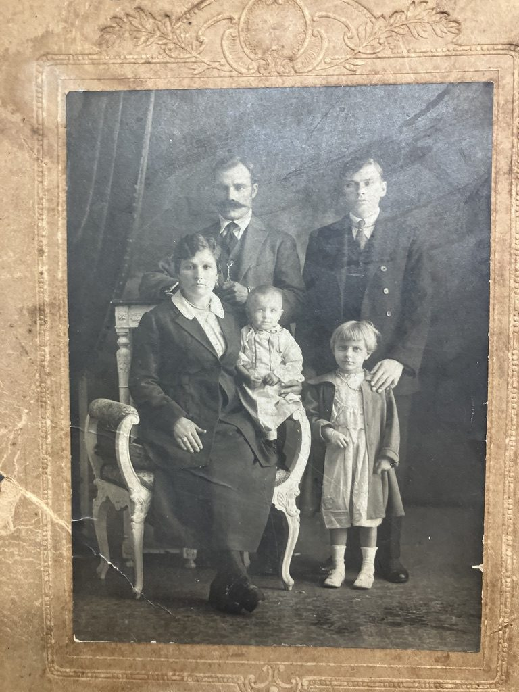
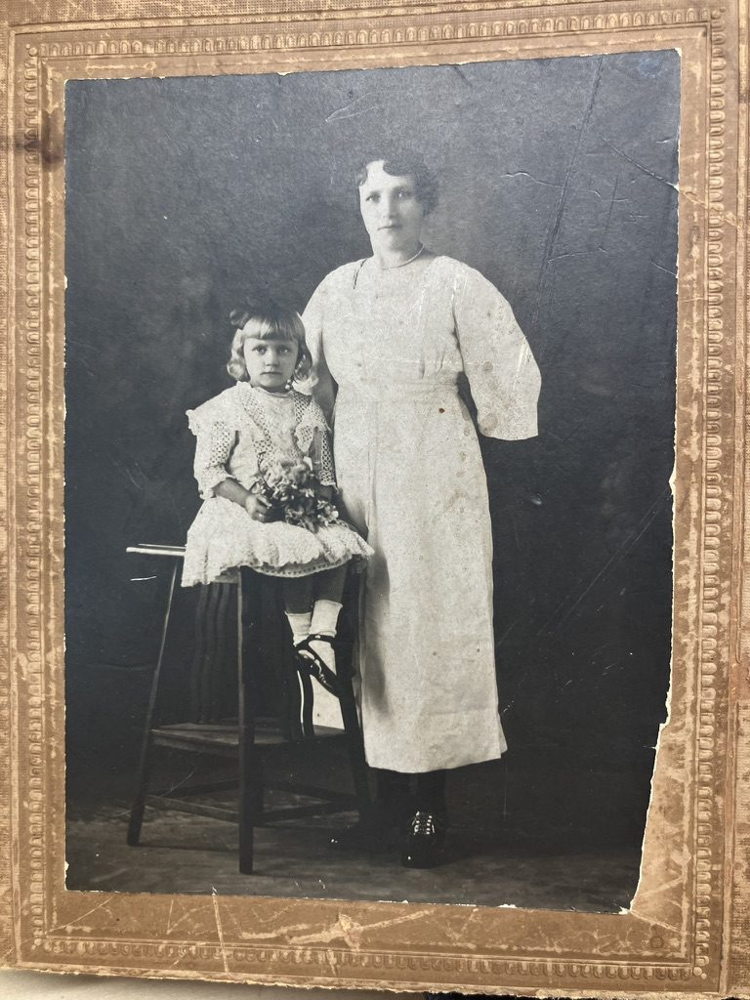

Family history
Anna Shupaka Radavich, 1882–1974
Fred's wife spent the First World War an ocean away from him, somehow reached Buenos Aires, and lived out fifty years in Greenfield, apparently never becoming an American citizen.
Birth and family
Anna was born on 22 December 1882.1 Where is less certain. Her Greenfield obituary says Vilaika, meaning the town of Vileika (Вилейка). But a 1966 Social Security earnings-record form gives her birthplace as "Krasne, White Russia": Krasnoe, the same parish area as Fred's family.8
The same record names her parents: Ephriam Shupaka and Elizabeth Mynkoski.8 In Russian that would probably be Ефрем Шупак and Елизавета Мынковская, but no Russian record of them has been found yet.
Her maiden name was Shupaka, the form the family kept and the one both of her obituaries use. Fred's death certificate has Schrysaka, and her sons' birth certificates have Supeker.2 On one certificate she also appears as "Annie Efin." Her son Alex carried Efin as his middle name, and it is probably a form of her father's name, Ephraim (Ефрем).
Married, then apart
Fred and Anna probably married around 1904. When Fred sailed for America in July 1905, the ship's list already marked him as married, and in the 1910 census, boarding alone in Greenfield, he said he had been married six years.3 Their marriage record hasn't been found. In one candidate register, the 1904 marriage book of the Molodechno town church, entries 22–27 (late May to early June) weren't filmed.
Fred left for America in 1905, and Anna stayed behind. When he registered for the draft in September 1918, he gave his nearest relative as "Mrs Annie Radwisch, Vilna Vilna Russia."4
Family lore
This is the story as it came down in the family. None of it has been confirmed by a record yet.9
- Anna was born in a place remembered as "Crosnia," probably Krasne, which is also the birthplace on her 1966 Social Security form.
- Fred went to America first (the family says 1903; his own papers say 1905). Anna and their baby daughter, Stella, were to follow.
- A cholera epidemic came through. Stella died, and Anna was gravely ill.
- When Anna did try to cross, she caught "pink eye" in steerage, was refused entry to the United States, and ended up in Buenos Aires. The "pink eye" was probably trachoma, one of the leading medical reasons immigrants were turned away.10
- There she worked as a nanny for a Jewish doctor's family.
- In the end a Russian Orthodox priest persuaded Fred to go and bring her home.
The outline fits the records well: it would explain why Anna was in Buenos Aires, why no record of her arrival there has turned up, and why Fred made the trip in 1920. The timing doesn't fit as told. Fred's 1918 draft card still gives her address as Vilna. Vilna was under German occupation from 1915 until late 1918, and the occupied zone's outer borders were "hermetically closed,"11 so her crossing was most likely in 1919 or 1920. Stella's death and Anna's turned-back crossing may be years apart rather than one chapter.
Buenos Aires
Sometime after September 1918, when Fred still gave her address as Vilna, and before January 1921, Anna got to Buenos Aires. How she did it is the biggest open question in the family's story. Argentina's immigration database, which is still being digitized, has no record of her arrival yet.5
Fred sailed from New York alone and landed in Buenos Aires on 4 September 1920.5 Four months later they arrived together at Ellis Island on the SS Huron. The manifest lists "Ana," 38, married, living in Buenos Aires, able to read Russian and Spanish. She had probably been in Argentina for some time.6
In the family's telling, she spent her time in Buenos Aires as a nanny for a Jewish doctor's family. The family identifies Anna as the woman in both of these portraits. Nothing on them gives a place or a date.9


Greenfield
She was about three months pregnant when they landed. Their sons were born in Greenfield: Fred Jr. in July 1921, when Anna was 38, then John in October 1923 and Alex in June 1927.2 The family lived along Deerfield Street for the rest of her life.
Fred died in October 1939, when Anna was 56. In the 1940 census she is the head of the household, with the three boys at home.7 In 1950 she answered "no" to the question of whether she was a naturalized citizen. There's no sign she ever did.7
Anna died on 18 April 1974 at Farren Memorial Hospital in Montague City. Her obituaries gave her age as 92 (by her birth date she was 91) and said she had lived in Greenfield for 55 years. She is buried beside Fred in Green River Cemetery.1
Still looking for
- Her baptism (December 1882), in the Krasnoe parishes or in Vileika.
- Her parents in Russian records. Social Security gives Ephriam Shupaka and Elizabeth Mynkoski.8
- The marriage, about 1904.
- Stella, the daughter the family remembers: her baptism and burial.
- Her journey to Argentina, and where she lived in Buenos Aires.
If you're descended from the Shupaka (Shupak) family of Krasnoe or Vileika, or the Mynkoski (Mynkovsky) family, I'd love to hear from you: hello at radavich dot com.
Only people who have died appear on this page.
Sources
- Obituaries in the Greenfield Recorder (19 April 1974, p. 7), which gives her birthplace as Vilaika, Russia, and the Springfield Union (20 April 1974, p. 9); Find a Grave memorial 116003488; Social Security Death Index (born 22 December 1882).
- Massachusetts birth certificates, Greenfield: Fred Jr. (28 July 1921, mother "Ina Supeker"), John (10 October 1923, "Anna Supeker"), Alex (19 June 1927, "Annie Efin"); Alex's World War II draft card ("Alex Efin Radavich"). Fred's Massachusetts death certificate (Greenfield, 1939; informant given as "Mrs. Fred Radavich," wife) for "Schrysaka"; both 1974 obituaries and John's 2019 obituary for "Shupaka."
- SS Kroonland passenger list, sailed from Antwerp 8 July 1905, list 19, line 24 ("Tadeus Radewicz," married). 1910 U.S. census, Greenfield, Franklin County, Massachusetts, enumeration district 501, sheet 24B, line 77; M2JL-QYR.
- Fred Radavich, World War I draft registration card, Greenfield, Massachusetts, 12 September 1918.
- Archivo General de la Nación (Argentina), immigrant arrivals database: Fred as "Rodzewitch, Frederick," SS Vestris, 4 September 1920. Anna not found under any spelling tried (checked again October 2026).
- SS Huron passenger list, Buenos Aires to Ellis Island, January 1921 (inspector's date 9 January), list 14, lines 19–20 (U.S. National Archives microfilm T715, roll 2904, p. 221); J6JG-S48.
- 1940 U.S. census, 393 Deerfield Street, Greenfield (citizenship: alien); 1950 U.S. census, Greenfield (6F3K-55VS).
- Social Security Administration, "Request for E/R action," Holyoke, Massachusetts, 11 April 1966: Radavich, Anna S, born 12/22/82; father Ephriam Shupaka; mother Elizabeth Mynkoski; born Krasne, White Russia.
- Family lore and family photographs. The story has come down through Anna's sons; a family member identified Anna in both portraits. Not yet confirmed by any record.
- Jessie Kratz, "The Buttonhook," Pieces of History, U.S. National Archives, 14 October 2014.
- Klaus Richter, "'Go with the hare's ticket': mobility and territorial policies in Ober Ost (1915–1918)," First World War Studies 6, no. 2 (2016): 151–170, doi:10.1080/19475020.2015.1088395.